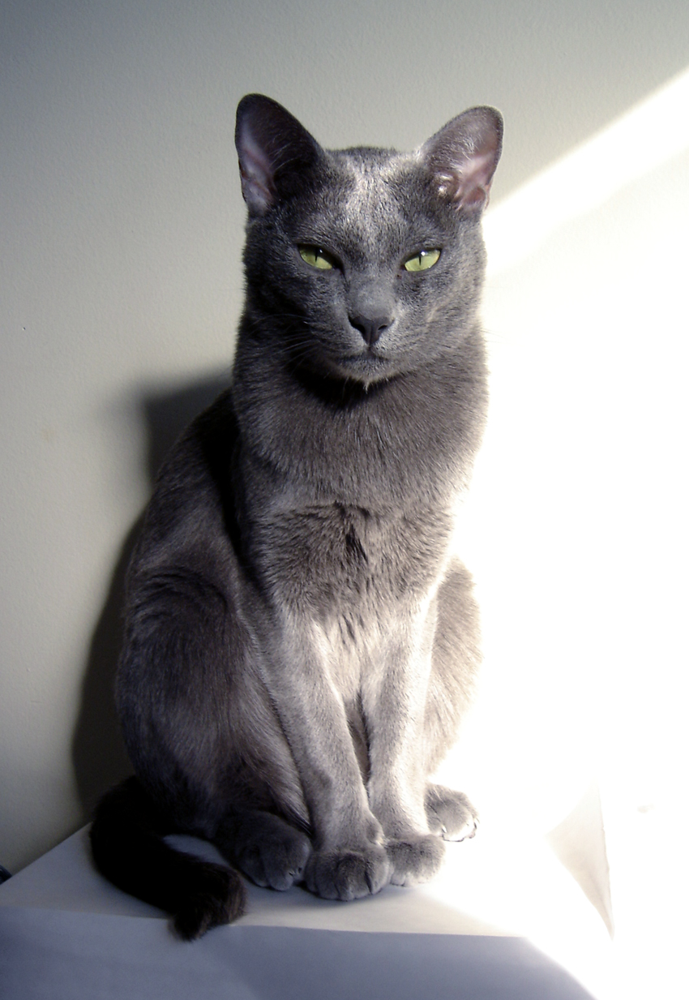

The Korat (Thai: โคราช, มาเลศ, สีสวาด, rtgs: Khorat, Malet, Sisawat) is a slate blue-gray short-haired breed of domestic cat with a small to medium build and a low percentage of body fat. Its body is semi-cobby, and surprisingly heavy for its size. It is an intelligent and playful[1] active cat that forms strong bonds with people. Among the Korats' distinguishing characteristics is its heart-shaped head and large green eyes.[2]
The Korat is a natural breed, and one of the oldest stable cat breeds. Originating in Thailand, it is named after the Nakhon Ratchasima province (typically called "Korat" by the Thai people). In Thailand, the breed is known as Si-Sawat, meaning "color of the sawat seed".[1] The Korat is known colloquially as the "good luck cat".[2] Traditionally, they are given in pairs to newlyweds or people who are highly esteemed, for good luck. Until recently, Korats were not sold, but only given as gifts.[1]
References
This article uses material from the Wikipedia article "Korat", which is released under the Creative Commons Attribution-Share-Alike License 3.0.
Morris, Desmond (1997). Cat World: A Feline Encyclopedia. New York: Penguin Books. pp. 251–253.
Cheryl Coleman (2014). "The Korat". The Cat Fanciers’ Association, Inc. Retrieved 25 October 2014
Picture: "Veda,chat-adulte-mâle-race-korat" by Veda Napha Naramit - Own work. Licensed under Public Domain via Wikimedia Commons.
{kind=link}